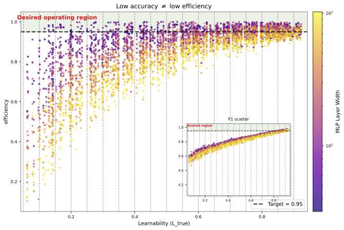
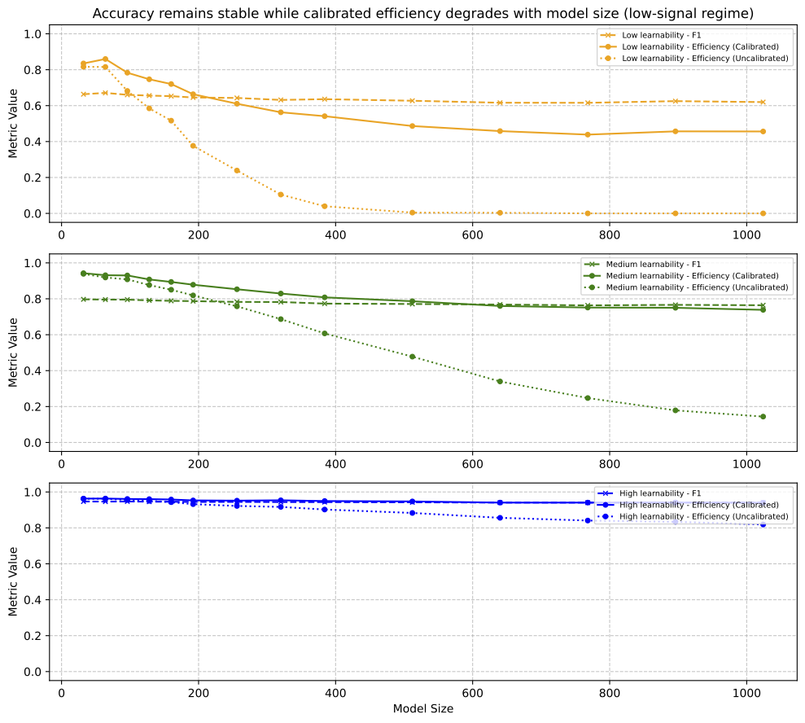

The objective of this note is to develop a practical method for measuring the learning efficiency of predictive models relative to the intrinsic structure present in a dataset. In many machine learning settings, model performance is evaluated solely by accuracy or loss metrics, which makes it difficult to distinguish whether poor performance arises from model limitations or from the inherent unpredictability of the target variable given the available inputs. Information theory provides a principled way to characterize this distinction through the mutual information \(I(X ; Y)\) which quantifies the amount of information the input variables \(X\) contain about the target \(Y\). However, direct estimation of mutual information in high-dimensional settings is typically intractable. This work proposes a practical approximation that uses negative log-likelihood (NLL) under a strong and well-calibrated reference model as a proxy for the conditional entropy \(H(Y | X)\). This enables us to estimate a reasonable lower bound on the intrinsic learnability of a dataset, and a corresponding notion of model learning efficiency as the fraction of available information that a given model successfully extracts from that data.
The present formulation focuses on static datasets where samples are assumed to be independently drawn from a fixed distribution. This setting allows a clean estimation of intrinsic learnability via conditional entropy. Extending this framework to time-varying data where observations arrive sequentially and may exhibit temporal dependence is an active direction of ongoing work. In such settings, learnability becomes a property of the underlying stochastic process rather than a fixed dataset, requiring a causal formulation based on entropy-rates and history-dependent predictions.
Our formulation builds on classical information theory, where mutual information \(I(X;Y)=H(Y)-H(Y|X)\) characterizes the maximum information about labels that can, in principle, be extracted from inputs (Cover and Thomas 2006). Log-loss provides a strictly proper scoring rule for probabilistic prediction (Gneiting and Raftery 2007), and modern work on calibration evaluates the alignment between predicted probabilities and empirical outcomes (Guo et al. 2017).
Recent work on scaling laws studies how predictive performance varies with model size, data volume, and compute (Kaplan et al. 2020; Hoffmann et al. 2022). These approaches identify regimes of diminishing returns and characterize compute-optimal model sizes for a given dataset. Related work also introduces data quality and redundancy as factors that influence effective scaling behavior (Subramanyam et al. 2025).
Complementary perspectives examine tradeoffs between compression and prediction at the representation level (Tishby et al. 2000; Grünwald 2007), as well as systems-level efficiency, where architectural and algorithmic optimizations reduce memory and compute requirements during inference (Alizadeh et al. 2024).
Existing work does not explicitly separate the intrinsic information available in a dataset from the information actually extracted by a model. This distinction is central to our framework, which focuses on quantifying extraction efficiency relative to the dataset’s inherent predictability, rather than optimizing performance under compute or data constraints.
In practice, when intrinsic limits are unknown, strong models or ensembles are commonly used as empirical reference points. For example, teacher–student distillation frameworks use high-capacity models to define target behavior (Hinton et al. 2015), and scaling-law analyses evaluate performance across model families (Kaplan et al. 2020) rather than against a theoretical bound, which is often computationally intractable.
Modern machine learning evaluation typically measures model performance using metrics such as accuracy, cross-entropy loss, or F1 score on a held-out dataset. While these metrics quantify predictive performance, they do not distinguish between two fundamentally different causes of error: model inefficiency and intrinsic unpredictability of the data. A model may perform poorly either because it fails to capture structure that exists in the data, or because the input variables simply do not contain sufficient information to reliably predict the target variable. In practice, these two scenarios are indistinguishable when evaluation relies solely on predictive accuracy.
This ambiguity becomes particularly problematic when evaluating new architectures, algorithms, or benchmarks. A low-performing model might suggest architectural deficiencies, but it could equally indicate that the dataset itself contains high levels of noise or irreducible uncertainty. Conversely, high performance may simply reflect a dataset with low intrinsic entropy rather than a particularly capable model.
Information theory provides a natural way to formalize this distinction. The mutual information \(I(X ; Y)\) measures how much information the input variables \(X\) contain about the target \(Y\) and therefore represents the maximum predictive information that any model could extract from the data. While theoretical limits of this kind are well understood in principle, they are rarely estimated in practice for real-world datasets.
As a result, models are typically evaluated only by their observed performance rather than by how close that performance is to the information limit imposed by the dataset.
To make this ambiguity precise, consider the commonly used F1 score for binary classification. Let \(\hat{Y} = f(X) \in \{0,1\}\) denote the predicted label. The F1 score is defined as the harmonic mean of precision and recall and depends only on the joint distribution \(p(\hat{Y}, Y)\). As such, it evaluates predictive performance purely in terms of agreement between predicted and true labels, without reference to the input variables \(X\). This leads to a fundamental limitation: the F1 score does not capture how much information about \(Y\) is actually available in \(X\). Consequently, two qualitatively different scenarios may yield identical F1 scores. In the first, the dataset may be intrinsically unpredictable, with \(H(Y \mid X) \approx H(Y)\) and \(I(X; Y) \approx 0\), so that even the Bayes-optimal classifier performs poorly. In the second, the dataset may contain substantial predictive structure, with \(H(Y \mid X) \ll H(Y)\), but the model fails to approximate the true conditional distribution. In both cases, the observed F1 score may be low, yet the underlying causes are fundamentally different. Moreover, the F1 score lacks a notion of a dataset-dependent performance ceiling: the maximum achievable F1 depends on the unknown distribution \(p(Y \mid X)\) and is therefore not accessible in practice. As a result, standard evaluation metrics measure what a model achieves, but not how close it operates to the information-theoretic limits imposed by the dataset.
A central question in predictive modeling is how much information about the target variable is actually present in the input data. Intuitively, if the inputs contain little information about the target, then even an ideal model cannot achieve high predictive accuracy. Conversely, if the inputs contain substantial information about the target, then poor model performance indicates that the model has failed to extract structure that exists in the data. We refer to the intrinsic predictability of a dataset as its learnability.
Let the dataset consist of input variables \(X\) and target variable \(Y\) jointly distributed according to an unknown distribution \(p(X,Y)\). This formulation assumes a static dataset setting where samples are independently drawn from this distribution. The marginal distributions are denoted by \(p(X)\) and \(p(Y)\), and the conditional distribution of the target given the input is \(p(Y|X)\). The entropy of the target variable is defined as
\[H(Y) = - \sum_{y} p(y)\log p(y)\] which measures the total uncertainty in the labels before observing the input. The conditional entropy of the target given the input is
\[H(Y|X) = - \mathbb{E}_{p(X,Y)}[\log p(Y|X)]\] which measures the residual uncertainty in the target after observing the input. The reduction in uncertainty obtained by observing the input is quantified by the mutual information
\[I(X;Y) = H(Y) - H(Y|X)\] which measures how much information the input variables contain about the target. We define the learnability of the dataset as the fraction of label uncertainty that can, in principle, be resolved using the input:
\[L(X,Y) = \frac{I(X;Y)}{H(Y)} = 1 - \frac{H(Y|X)}{H(Y)}\]
This normalization ensures that learnability lies in the interval \([0,1]\). When \(L(X,Y)=0\), the inputs contain no information about the target, and prediction is fundamentally impossible. When \(L(X,Y)=1\), the target is fully determined by the inputs.
In practice, computing \(L(X,Y)\) requires estimating the conditional entropy \(H(Y|X)\), which depends on the true conditional distribution \(p(Y|X)\). For realistic datasets this distribution is unknown and generally intractable to estimate directly.
To obtain a practical approximation, we instead train a high-capacity golden model \(G\) whose purpose is to approximate the true conditional distribution. Let the predictive distribution of this model be denoted by \(q_G(Y|X)\), where
\[q_G(Y|X) \approx p(Y|X)\]
Under this approximation, the conditional entropy can be estimated using the negative log-likelihood of the golden model:
\[H(Y|X) \approx - \mathbb{E}_{p(X,Y)}[\log q_G(Y|X)]\]
This expectation can be estimated empirically on held-out data as follows.
Let the dataset be \[\mathcal{D}=\{(x_i,y_i)\}_{i=1}^{n}, \qquad y_i \in \{1,\dots,K\}.\] The probabilistic predictor \(G\) returns a categorical distribution over labels: \[G(x) \equiv q_G(\cdot \mid x)\in\Delta^{K-1}, \qquad q_G(k\mid x)\ge 0,\quad \sum_{k=1}^K q_G(k\mid x)=1.\] (Throughout, logarithms are base-2 (units: bits). Switching to natural logs yields units of nats.)
Let the empirical class probabilities be \[\hat p(k) \;=\; \frac{1}{n}\sum_{i=1}^{n}\mathbf{1}\{y_i=k\}.\] The empirical label entropy is \[\hat H(Y) \;=\; -\sum_{k=1}^{K}\hat p(k)\log_2 \hat p(k),\] with the convention \(0\log 0 \equiv 0\).
For a single example \((x_i,y_i)\), the negative log-likelihood under model \(G\) is \[\ell_i(G) \;=\; -\log_2 q_G(y_i\mid x_i).\] Here \(q_G(y_i \mid x_i)\) denotes the probability assigned by the model \(G\) to the true label \(y_i\) given input \(x_i\). In general this probability is typically strictly less than 1 in stochastic or noisy settings (the probability mass function is smeared around the true label). The per-sample negative log-likelihood \(\ell_i(G)\) therefore measures the information (in bits) associated with the event that the model assigns probability \(q_G(y_i \mid x_i)\) to the observed label. The empirical NLL over a dataset \(\mathcal{D}\) is the sample mean \[\widehat{\mathrm{NLL}}_G(\mathcal{D}) \;=\; \frac{1}{n}\sum_{i=1}^{n} \ell_i(G) \;=\; -\frac{1}{n}\sum_{i=1}^{n}\log_2 q_G(y_i\mid x_i).\] \(\widehat{\mathrm{NLL}}_G\) as estimated above can serve as an upper bound to the true conditional entropy as: \[\widehat{\mathrm{NLL}}_G \geq H(Y | X)\] Consequently, learnability, expressed as the normalized information contained in the dataset can be approximated by the golden model \(G\) as :
\[\boxed{ L_G(X,Y) \approx 1 - \frac{\widehat{\mathrm{NLL}}_G }{\hat H(Y) } }\] Because the golden model only approximates the true posterior distribution, the resulting estimate constitutes a lower bound on the true learnability ceiling. The gap between the estimated learnability and the true value depends on how well the golden model approximates \(p(Y|X)\), and therefore on the representational capacity and training quality of \(G\).
Evaluation protocol. To approximate generalization, \(\widehat{\mathrm{NLL}}_G\) should be computed on held-out data (validation/test or out-of-fold predictions), not on the training set.
Noting, that the above framework solely captures the learnability of the dataset (with \(G\) being an oracle estimator - used offline for evaluation), we now discuss the canonical efficiency of a given model under test: \(F\). We pass the model \(F\) through the above framework to calculate the normalized mutual information between the true labels \(Y\) and the labels \(F(X)\) predicted by \(F\) as: \[\begin{equation} I_n(F(X);Y) = 1 - \frac{H(Y\mid F(X))}{H(Y)} \approx 1 - \frac{\widehat{\mathrm{NLL}}_F}{\hat H(Y)} \end{equation}\] and finally normalize it to calculate the efficiency factor as:
\[\begin{equation} \boxed{ \eta(f)\;\coloneqq\;\frac{I_n(F(X);Y)}{ L_G(X,Y)}. } \end{equation}\]
This section discusses how the proposed quantities behave under several important regimes and clarifies how to interpret the resulting metrics.
The dataset learnability \(L_G(X,Y)\) measures the fraction of label entropy that can be explained by the input variables.
\(L_G(X,Y)\approx 0\). The inputs contain little information about the labels. Even an optimal model cannot achieve reliable prediction, and performance near random guessing is expected.
\(L_G(X,Y)\approx 1\). The labels are almost fully determined by the inputs. High predictive accuracy should in principle be achievable.
Intermediate values. Most real datasets fall in this regime, where part of the label entropy is predictable and the rest represents irreducible uncertainty or noise.
The efficiency score
\[\eta(f) = \frac{I_n(F(X);Y)}{L_G(X,Y)}\]
measures the fraction of available information that the model \(F\) extracts from the dataset.
\(\eta(f)\approx 1\). The model extracts nearly all of the information available in the dataset. Further architectural improvements are unlikely to produce large gains unless the dataset itself changes.
\(\eta(f)\ll 1\). The dataset contains predictive structure that the model fails to capture. Model improvements may significantly increase performance.
If the labels are deterministic functions of the inputs, then
\[H(Y|X)=0.\]
In this case the intrinsic learnability is
\[L(X,Y)=1.\]
If both the golden model \(G\) and the evaluated model \(F\) perfectly capture the mapping, their NLL approaches zero and the estimated mutual information approaches the label entropy:
\[I(F(X);Y) \to H(Y).\]
When the target contains stochastic components, the conditional entropy
\[H(Y|X) > 0\]
even for the Bayes-optimal predictor. In this setting the negative log-likelihood cannot approach zero, and the achievable predictive performance is fundamentally limited by the noise level of the dataset.
If labels are statistically independent of the inputs, then
\[I(X;Y)=0.\]
Consequently the learnability approaches
\[L(X,Y)\approx 0.\]
In this regime any model, regardless of complexity, performs no better than random guessing. This case serves as a useful sanity check for the framework.
The NLL metric penalizes models that assign high confidence to incorrect predictions. An overconfident but inaccurate model may therefore achieve poor NLL even if its classification accuracy appears reasonable. This behavior is desirable because the proposed framework measures the information conveyed by the full predictive distribution rather than only the top predicted label.
The framework requires models to produce probabilistic outputs \(q_F(y|x)\). Hard-label predictions discard uncertainty information and prevent accurate estimation of conditional entropy. For deterministic classifiers, probability calibration techniques may be required before computing NLL-based quantities.
In many real-world systems, data is generated sequentially and exhibits temporal dependence. Examples include sensor streams, financial time series, and interactive systems. In such settings, the assumption of independently sampled \((X,Y)\) pairs no longer holds, and the notion of learnability must be generalized.
A natural extension is to define learnability over sequences \((X_{1:T}, Y_{1:T})\) , where prediction at time \(t\) depends on the history \(X_{1:t}\). The corresponding intrinsic uncertainty is governed by conditional entropy rates rather than single-step conditional entropy. This leads to a time-indexed notion of learnability that varies along the trajectory and reflects the evolving predictability of the process. Developing a practical approximation of this sequential learnability, analogous to the NLL-based estimator proposed here, remains an open direction for future work.
This section describes the validation plan for the learnability framework and demonstrate that negative log-likelihood (NLL) can be used to:
Estimate a lower bound on the dataset learnability (intrinsic predictability).
Separate model inefficiency from intrinsic dataset uncertainty.
We generate an ensemble of synthetic datasets with varying degrees of learnability and evaluate the framework on the ensemble. Since the dataset is synthetic, we have full knowledge of the true posterior density of labels which gives us the true underlying learnability of the ensemble. We will then run a high-powered oracle model (\(G\)) to estimate the learnability of the ensemble, which will serve as a tight lower bound on the true learnability. This lower bound from the oracle model will then be used as a baseline for computing the efficiency of a library of models under test.
Let \(X \in \mathbb{R}^d\) denote the feature vector. We partition the feature space into subsets with different distributions to induce heterogeneous learnability:
\[\begin{align*} X = [X^{(1)}, X^{(2)}], \quad X^{(1)} \in \mathbb{R}^{d_1}, \; X^{(2)} \in \mathbb{R}^{d_2}, \; d_1 + d_2 = d \end{align*}\]
The feature subsets are drawn as: \[\begin{align*} X^{(1)} &\sim \mathcal{N}(0, I_{d_1}) \\ X^{(2)} &\sim \mathcal{D} \quad \text{(non-Gaussian or structured distribution)} \end{align*}\]
where \(\mathcal{D}\) can be chosen to control feature informativeness (e.g., heavy-tailed, bounded, or low-variance distributions).
The latent score is defined as: \[\begin{align*} t(X) = \beta\, w^\top X \end{align*}\] where \(w\) is a binary vector used to mask out a randomly selected feature subset. The conditional label distribution is: \[\begin{align*} p(y=1 \mid X) = \sigma(t(X)) = \frac{1}{1 + e^{-t(X)}} \end{align*}\]
The binary label is then sampled as: \[y \sim \mathrm{Bernoulli}(p(y=1\mid X)).\]
The learnability of the dataset is governed by three factors:
Signal strength (\(\beta\)): controls the separation between classes. For example:
High learnability: \(\beta = 4.0\)
Medium learnability: \(\beta = 1.5\)
Low learnability: \(\beta = 0.5\)
Sparsity of the signal (\(d'\)): number of active dimensions in \(w\) (number of 1’s entries in \(w\)). The remaining \((d - d')\) components are set to zero.
High learnability: \(d' = d\) (all features contribute)
Medium learnability: \(d' = \frac{d}{2}\)
Low learnability: \(d' = 1\)
Feature distribution heterogeneity: controls how informative different subsets of \(X\) are.
High learnability: informative features concentrated in \(X^{(1)}\) (Gaussian, well-conditioned)
Medium learnability: signal spread across both \(X^{(1)}\) and \(X^{(2)}\)
Low learnability: signal concentrated in weak or noisy subset \(X^{(2)}\)
This construction allows independent control over signal strength, sparsity, and feature distribution, enabling a richer spectrum of learnability regimes beyond isotropic Gaussian settings.
The dataset is generated as described in section 7.1 with the following parameters to control the learnability:
Signal strength: \(0.5 < \beta \leq 10\)
Sparsity: \(\frac{d'}{d} \in\) [0.1, 0.5, 1.0]
Models. We train fixed-depth MLPs with width ranging from 32 to 1024, thereby scaling capacity while keeping architecture constant.
Metrics. For each model \(f\):
NLL(f): \(-\mathbb{E}_{p(X,y)}[\log f(Y|X)]\)
F1 score (standard accuracy proxy)
Model score: \(\hat{\L}(f) = 1 - \frac{\mathrm{NLL}(f)}{H(Y)}\)
Efficiency: \(\eta(f) = \frac{\hat{\L}(f)}{\L_{\text{true}}}\)
Efficiency measures the fraction of extractable information captured by the model.

Figure 1 plots efficiency as a function of dataset learnability for models of different sizes.
Key pattern:
In high-learnability regimes, all models converge in both accuracy and efficiency
In low-learnability regimes, efficiency differs across model sizes, even when accuracy remains similar
Critically, the inset shows that:
All models appear equivalent under F1 score.
However,
Raw efficiency differs substantially across model sizes
Smaller models often achieve higher efficiency in low-learnability regimes
This indicates that two models with identical accuracy can still differ in their probabilistic alignment with the underlying data, particularly in low-signal regimes. We interpret this as metric decoupling where accuracy reflects correctness of discrete decisions while efficiency reflects how much of the data’s available signal is captured in the predictive distribution.

Figure 2 shows model scaling behavior as capacity increases for datasets with varying levels of intrinsic learnability.
Observation: Once model capacity exceeds the dataset’s effective learnability, further increases in capacity do not improve the amount of information extracted from the data, even though predictive accuracy remains largely unchanged.
More concretely:
F1 score remains nearly constant across model sizes.
Raw NLL worsens with increasing capacity.
After calibration, NLL improves substantially, but a residual gap remains.
Efficiency decreases and approaches a lower plateau in low-learnability regimes.
This indicates that there exists a data-dependent capacity threshold beyond which, additional model capacity yields diminishing or negative returns in probabilistic fidelity, does not improve predictive accuracy, and reaches an efficiency-floor after optimal model calibration. We refer to this regime as capacity-information saturation:
Model capacity grows, but the amount of information extracted from the data starts exhibiting diminishing, and sometimes negative, returns after calibration.
Importantly, this behavior is not reflected in accuracy-based metrics, which remain stable across model sizes.
In this section we evaluate the framework on Avazu CTR prediction, a real-world tabular classification task with unknown intrinsic learnability. Since the true learnability is unavailable, we approximate a practical reference ceiling using the best calibrated held-out NLL among a family of strong tabular models, including gradient-boosted trees and TabTransformer. We then compare a small family of MLPs of increasing width against this empirical ceiling.
These results empirically separate two concepts that are often conflated:
Learnability (\(L_{\text{true}}\)): the intrinsic amount of predictable information present in the dataset
Efficiency (\(\eta\)): how much of that available information a model actually extracts
When model capacity increases beyond the point at which the available signal is already well captured, further scaling does not increase the amount of extractable information. Instead, it produces diminishing returns in probabilistic fidelity and, in low-learnability regimes, may reduce efficiency even after calibration.
Formally, \[NLL(f) = H(Y|X) + \mathbb{E}_X D_{KL}\!\left(P^*(Y|X)\,\|\,f(Y|X)\right)\] This decomposition makes clear that held-out NLL differs from the intrinsic uncertainty \(H(Y|X)\) by a mismatch term measuring how far the model’s predictive distribution is from the true conditional distribution. In our experiments, calibration reduces a substantial part of this mismatch, but a residual gap remains in low-signal regimes as model size increases.
The resulting picture is not one of unbounded collapse, but of capacity–information saturation: beyond a dataset-dependent threshold, additional capacity does not yield additional extracted signal and may lead to lower efficiency.
Modern model selection is often dominated by accuracy-based metrics. These results show that:
Models can have similar predictive accuracy while differing substantially in information extraction efficiency.
Increasing model capacity can yield diminishing or negative returns in probabilistic fidelity without materially improving accuracy.
This effect is strongest in low-learnability regimes, where the data itself limits the amount of extractable signal.
The learnability–efficiency framework therefore provides a way to:
quantify the intrinsic predictability of synthetic datasets, and approximate practical reference ceilings when true limits are unknown.
identify regimes in which calibration improves reliability but does not fully close the gap between model predictions and available signal.
compare models based not only on decision correctness, but on how much information they extract from the data relative to what the data can support.
In this sense, the framework is not primarily a claim about model failure, but a tool for identifying when additional capacity is no longer justified by the information content of the dataset.